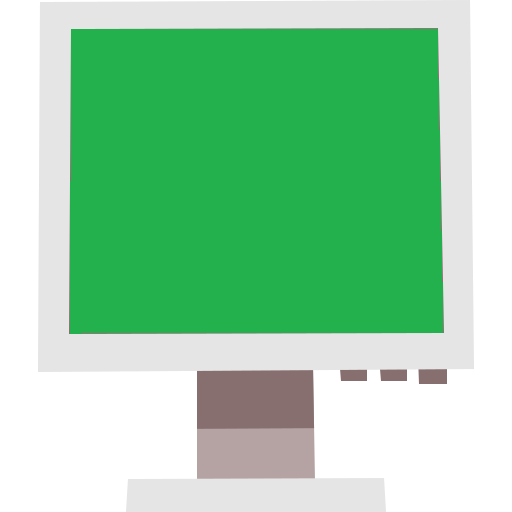
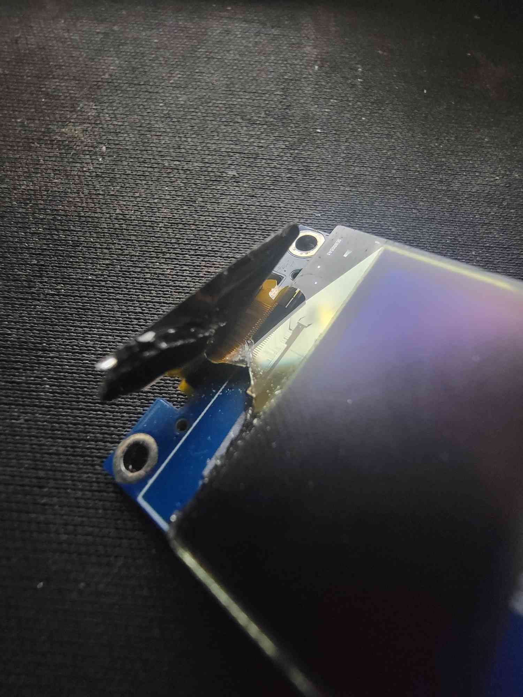
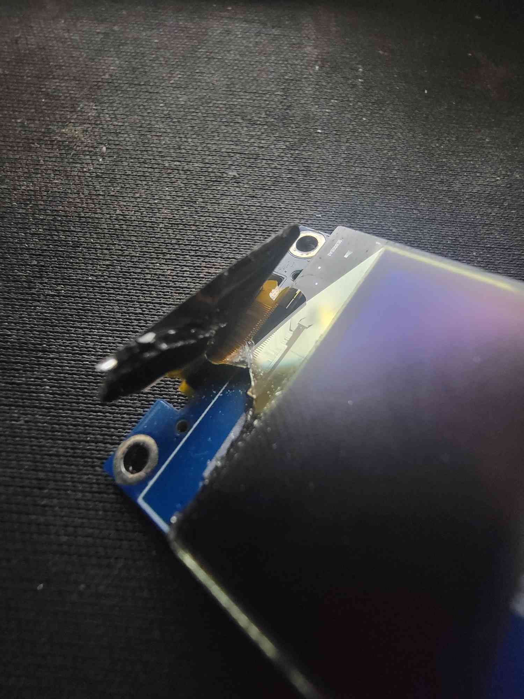
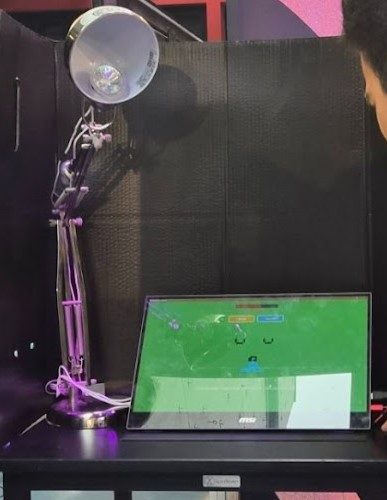

wake
¸.·´¯`·.¸.·´¯`·.¸.·´¯`·.¸.·´¯`·.¸.·´¯`·.¸.·´¯`·.¸.·´¯`·.¸.·´¯`·.¸.·´¯`·.¸.·´¯`·.¸.·´¯`·.¸.·´¯`·.¸.·´¯`·.¸.·´¯`·.¸.·´¯`·.¸.·´¯`·.¸.·´¯`·.¸.·´¯`·.¸
My school project group(5) was tasked to explore the ethical implications of smart technology that actively punishes user behavior. The Smart Home prototype responds to user behavior with such as lowering the heating, blocking the use of accessing devices or turning off lights. This experiment allows users to explore the power relationship between technology and human experience.
my group contained:
Users to experience the control and power of smart technology when it actively punishes them instead of supporting.
I was assigned to be a creative technologist wich is simmilar to a jack of all trades. I was tasked with a wide viarity of different problems,
such as:
To make Bob more impactfull I created some IOT devices. This is to amplify the feeling of losing control and being powerless. You can see image[1/4] there a photo of the thermostat i build, it has 2 buttons + and -. For this project it was just a screen that changes numbers and is remotely controllable to change the tempature. The whole device was designed and build from scratch (raspi pico 2W, cables, buttons, breadboard, firmware, case).

 

Image[2,3,4] are all off the same device. The doorbell was originally ment to capture a users face and search a database to match a name and profession to it. Unfortunatly this was to broad of a scope. We changed it to letting a user speak its name so that could be send to Bob for usage. In each image you see a different time in the process of creating the doorbell. The functionality of the doorbell is holding a button, speaking ur name or speaking it in a sentence. the microphone inside the doorbell records the voice and sends it to a more beefy device. This beefy device makes use of a neuralnet wich filters out the name and sends it to Bob to use.
During the design of Bob we wanted to make something simple but impactfull. From past experiences i know that pixelart was the place for that. It can deliver emotions and expressions while being easy to make and lightweight. The face of Bob needed to be able to do the following:


In the images above there are different parts of the process. In image[1] you can see a sketch. This was at the start where we brought a bunch of diffrent idea's. We ran user test and asked them to fill a form, asking wich face and voice was the most fitting.
In image[2] are the tests of the right TTS being run in a remote notebook. We informed our stakeholders of the best 3 and made a decision.
Image 3 contains a small overview of the code scructure. We decided to write the program in python, because of its flexibility and wide level of available library's. The face of Bob file contains of 2 classes. 1 class to construct the environment, the other to create the face. When creating an object of the face class it ihearits all the attributes of the environment. This means that it will build a whole application by simply calling 1 class. To make this be able to comunicate with other devices we decided to run a API on a seperate tread and allowing memory to be shared between them. So can it be reached and send data remotely without the main application slowing down.
Comunication is also a importand aspect of the project. I needed to acitvly comunicate with my stakeholder and team to keep the project on track. We did this by using the scrum process and working in sprints. This project contained 4 sprints. Each sprint we discussed and assigned the coming tasks. We also reguarly informed our stakeholder and project owner about the progression of the product and implemented any feedback or changes given.
The result of our work was displayed at the exposition of the Darktech Studio at the HvA. We made a room controlled by our system, "Bob", whom you've probably already met at the top. Bob is the face of our Smart home system. Giving it a face makes it more interactive for a user. After the experience, its not just a face its a reminder of the dark side of technology, it gives something to blame...
Here is how Bob works in a production environment. Bob is an AI agent that constantly monitors. He has senses so he can hear, see, feel, Bob can do what you give him. The more smart devices the more control Bob can get. If Bob sees you open ur fridge 5 times within 1 hour, he will actively make a decision to shut the door to keep you from gaining weight. Showering for 1 hour? Bad for you! Bob knows best of course and decides to turn it off...
I think you get concept now.
AA